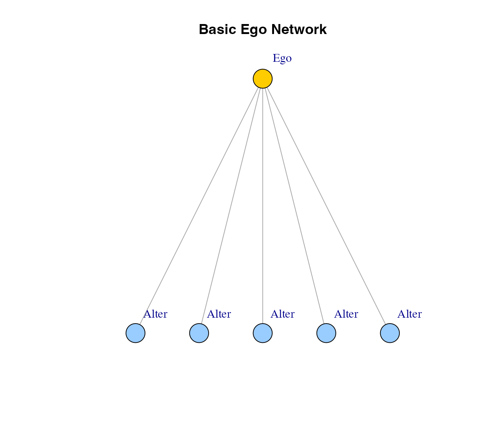
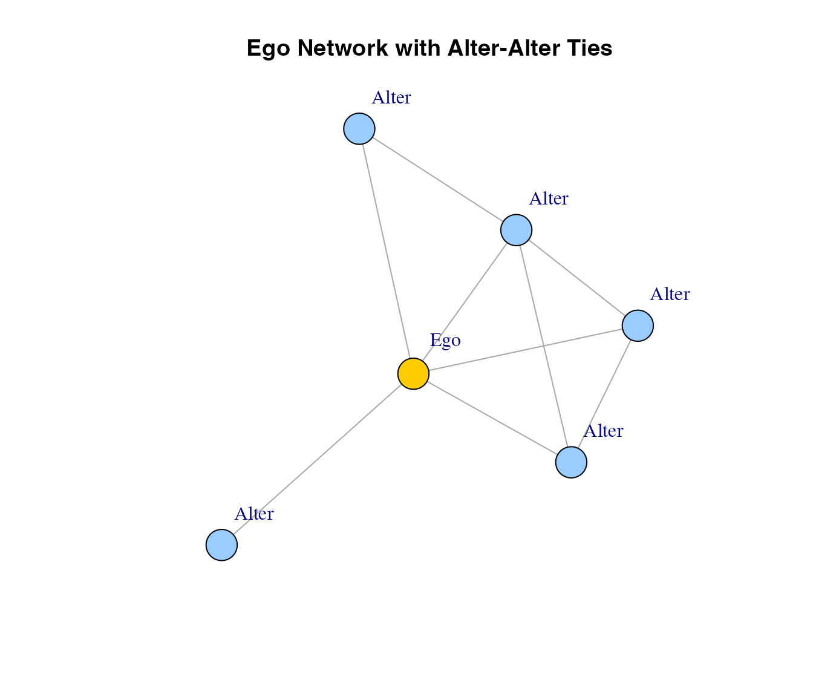
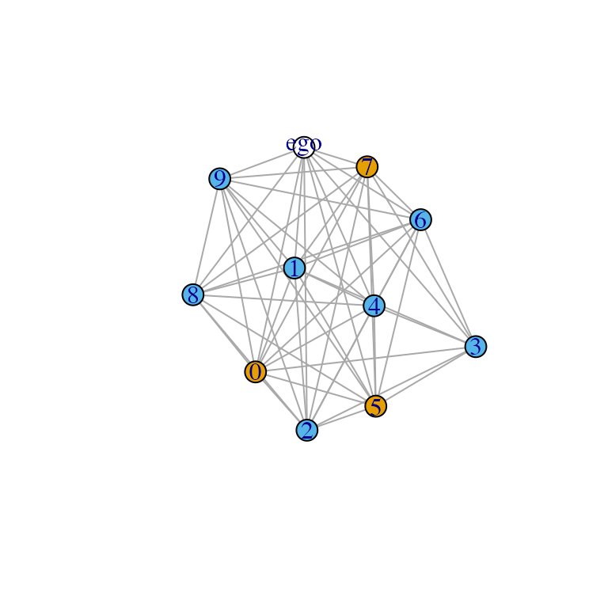
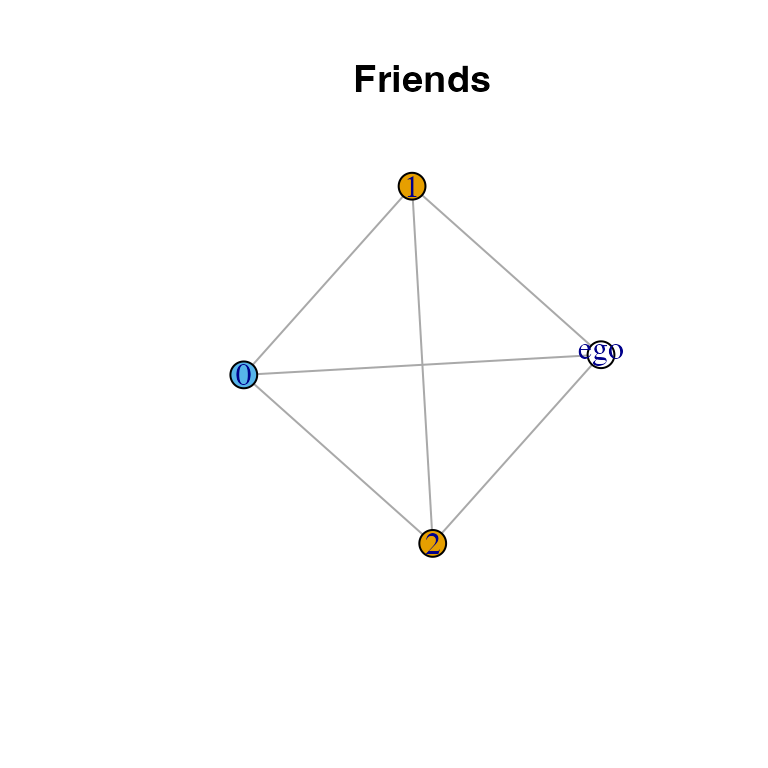
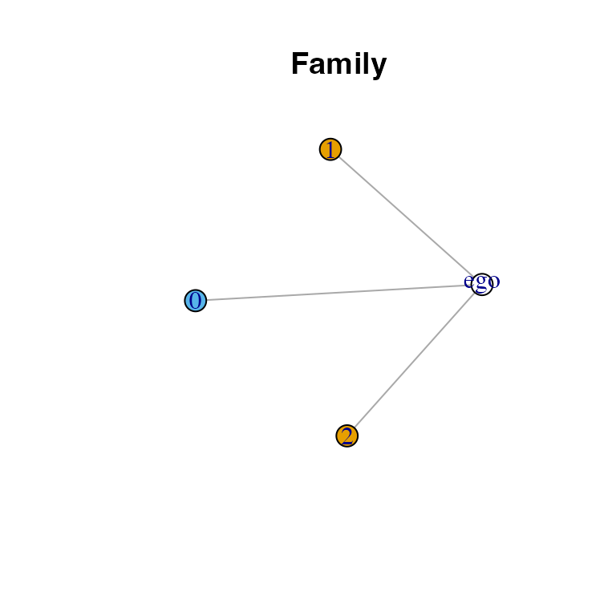
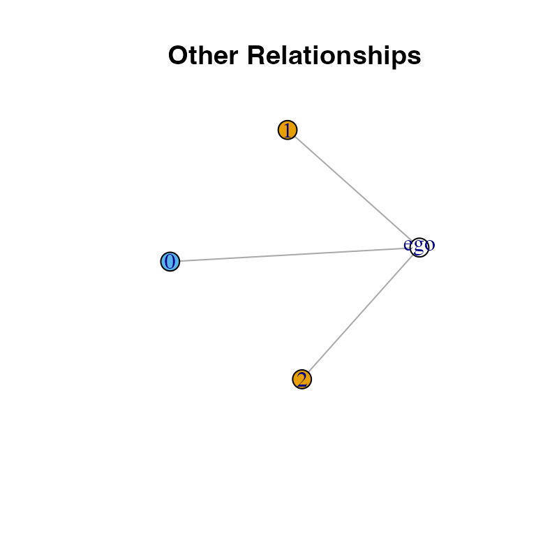

ego_netwrite Functionego_netwrite.RmdThe goal of the ideanet R package is to lower the
barrier of entry to network analysis for students, entry-level scholars,
and non-expert practitioners interested in relational measurement. Some
researchers may have data and questions that are suitable to network
analysis. And yet, getting comfortable with the tools available in R can
prove to be an arduous and time consuming task. Moreover, network
analysis in R can be far from straightforward: available tools in R are
shared between several packages, each with their own strengths and
weaknesses. This breadth of options can make it difficult to produce
reliable results by making the correct function for a given measurement
difficult to identify and, at worst, packages conflicting with each
other and relying on different assumptions about the data. For many
researchers, this can prove to be an effective deterrent when engaging
in relational analysis. ideanet is a set of functions which
leverages existing network analysis packages in R (igraph,
network, sna) to provide high quality
measurements seamlessly from the starting data.
This package, as part of the broader IDEANet project, is supported by the National Science Foundation as part of the Human Networks and Data Science - Infrastructure program (BCS-2024271 and BCS-2140024).
Local, or egocentric, networks describe the relationships that exist between a focal actor (called “ego”) and their contacts (referred to as “alters”). Depending on how these networks are collected, they may also describe relationships that exist between each of the focal ego’s alters. The figures below illustrate how ego networks appear when 1. only ties between an ego and its alters are recorded, and 2. when ties between alters are available:


Most egocentric data also contain information describing characteristics of ego and their alters at the individual level. Researchers often collect egocentric data when efforts to capture sociocentric networks are impossible or highly impractical, such as in studies of hard-to-reach populations.
While sociocentric datasets typically store a single, large network,
egocentric data usually contain several smaller networks (hereafter
ego networks) that may or may not exist in isolation of one
another. Users applying ideanet to egocentric data can use
the ego_netwrite function to generate an extensive set of
measures and summaries for each ego network in their data. Although
egocentric data can be stored in a variety of ways,
ego_netwrite requires a specific format that we believe
makes the representation of egos, alters, and the ties between them more
intuitive. This format divides egocentric data into three items:
In some cases, users may have all the information contained in the
above three items stored in a single, wide dataset. When this is the
case, users may be able to use ideanet’s,
ego_reshape function to split their data into these items.
We recommend that users with such a dataset consult this function’s
documentation:
?ego_reshapeAs of initial release, ego_netwrite supports the
processing of ego networks with directed ties (in which each
tie has a distinct sender and receiver) and undirected ties (in
which ties merely represent a connection between actors). The function
also supports multirelational networks in which edges may
represent one of several different types of relationships between
actors.
However, ego_netwrite does not currently support
the processing of edge/tie weights, which signify the
strength of connections between actors. The function assumes that all
ties in a dataset are of equal strength when calculating measures. At
present, we recommend that users employ other tools for calculating
measures based on weighted edges.
Additionally, some egocentric datasets contain networks in which
nodes in one ego network may also appear in another. In these cases, it
is possible to aggregate individual ego networks with shared nodes into
broader, more sociocentric structures. Theoretically, one could use the
alter list and alter-alter edgelist created by ego_netwrite
to construct a larger network. However,
ego_netwrite itself assumes that
each ego network in a dataset exists independent of all others.
We advise users interested in constructing larger structures from
individual ego networks to use other tools (or write their own code) in
order to do so.
ego_netwrite
To familiarize ourselves with ego_netwrite and other
functions for ego networks, we’ll work with an example ego list, alter
list, and alter-alter edgelist native to the ideanet
package. These data are a simplified subset of ego networks collected in
an online study using the “Important Matters” name generator question
(NGQ). This question is frequently used to capture people’s close
personal ties:
library(ideanet)
#> Loading required package: igraphdata
# Ego list
ngq_egos <- ngq_egos
# Alter list
ngq_alters <- ngq_alters
# Alter-alter edgelist
ngq_aa <- ngq_aaLet’s look over each of these data frames:
dplyr::glimpse(ngq_egos)
#> Rows: 20
#> Columns: 9
#> $ ego_id <int> 1, 2, 3, 4, 5, 6, 7, 8, 9, 10, 11, 12, 13, 14, 15, 16, 17, …
#> $ age <dbl> 41, 14, 35, 17, 43, 24, 12, 24, 44, 24, 12, 52, 26, 11, 18,…
#> $ sex <dbl> 2, 1, 2, 2, 1, 1, 1, 1, 2, 2, 1, 2, 1, 1, 2, 2, 1, 1, 1, 2
#> $ race <chr> "White", "Other", "White", "White", "White", "Other", "Whit…
#> $ black <lgl> FALSE, FALSE, FALSE, FALSE, FALSE, FALSE, FALSE, FALSE, FAL…
#> $ white <lgl> TRUE, FALSE, TRUE, TRUE, TRUE, FALSE, TRUE, FALSE, TRUE, TR…
#> $ other_race <lgl> FALSE, TRUE, FALSE, FALSE, FALSE, TRUE, FALSE, TRUE, FALSE,…
#> $ edu <dbl> 5, 7, 7, 6, 7, 6, 7, 6, 6, 5, 4, 5, 4, 4, 5, 5, 5, 6, 5, 5
#> $ pol <dbl> 3, 2, 3, 3, 2, 3, 3, 3, 6, 3, 1, 7, 4, 3, 4, 1, 4, 5, 2, 1Our ego list contains information for the 20 egos in our dataset. The ego list also has information regarding the age, sex, race/ethnicity, educational attainment, and political leanings of each ego.
dplyr::glimpse(ngq_alters)
#> Rows: 67
#> Columns: 14
#> $ ego_id <int> 1, 1, 2, 3, 3, 3, 3, 3, 4, 4, 4, 4, 4, 4, 4, 4, 4, 4, 5, 5,…
#> $ alter_id <int> 1, 2, 1, 1, 2, 3, 4, 5, 1, 2, 3, 4, 5, 6, 7, 8, 9, 10, 1, 2…
#> $ sex <dbl> 1, 1, 1, 1, 1, 1, 2, 2, 1, 2, 2, 2, 2, 1, 2, 1, 2, 2, 2, 1,…
#> $ race <chr> "White", "White", "White", "Black", "White", "White", "Whit…
#> $ white <lgl> TRUE, TRUE, TRUE, FALSE, TRUE, TRUE, TRUE, TRUE, TRUE, TRUE…
#> $ black <lgl> FALSE, FALSE, FALSE, TRUE, FALSE, FALSE, FALSE, FALSE, FALS…
#> $ other_race <lgl> FALSE, FALSE, FALSE, FALSE, FALSE, FALSE, FALSE, FALSE, FAL…
#> $ pol <dbl> 5, 7, 2, 1, 3, 2, 2, 2, 1, 1, 1, 1, 1, 1, 2, 1, 2, 3, 3, 2,…
#> $ family <lgl> TRUE, FALSE, FALSE, FALSE, FALSE, FALSE, FALSE, FALSE, FALS…
#> $ friend <lgl> FALSE, TRUE, FALSE, TRUE, TRUE, TRUE, TRUE, TRUE, FALSE, FA…
#> $ other_rel <lgl> FALSE, FALSE, TRUE, FALSE, FALSE, FALSE, FALSE, FALSE, FALS…
#> $ face <dbl> 5, 2, 4, 3, 1, 1, 3, 4, 5, 5, 3, 4, 4, 3, 3, 2, 2, 2, 5, 2,…
#> $ phone <dbl> 5, 2, 4, 1, 1, 1, 2, 2, 4, 3, 3, 1, 3, 1, 1, 1, 1, 1, 4, 2,…
#> $ text <dbl> 5, 4, 4, 1, 5, 5, 2, 4, 5, 4, 4, 3, 4, 4, 2, 3, 3, 4, 4, 2,…Just as described, the first column in the alter list is the ID
number of the ego corresponding to each alter; the second column is the
unique ID number for each alter within each ego network. In addition to
information regarding the sex and race/ethnicity of each alter, this
alter list contains dyadic data about the relationship between
ego and alter. family, friend, and
other_rel indicate whether an ego identified an alter as a
family member, a friend, or another kind of relationship respectively.
Further, the face, phone, and
text columns indicate how frequently an ego reported
communicating with an alter face-to-face, via telephone, or via
text.
dplyr::glimpse(ngq_aa)
#> Rows: 123
#> Columns: 5
#> $ ego_id <int> 3, 3, 3, 4, 4, 4, 4, 4, 4, 4, 4, 4, 4, 4, 4, 4, 4, 4, 4, 4, 4…
#> $ alter1 <dbl> 1, 1, 2, 1, 1, 1, 1, 1, 1, 1, 1, 1, 2, 2, 2, 2, 2, 2, 2, 2, 3…
#> $ alter2 <dbl> 2, 4, 3, 2, 3, 4, 5, 6, 7, 8, 9, 10, 3, 4, 5, 6, 7, 8, 9, 10,…
#> $ type <chr> "friends", "friends", "friends", "friends", "friends", "frien…
#> $ freqtalk <dbl> 1, 3, 4, 5, 3, 3, 3, 4, 3, 4, 3, 4, 4, 3, 4, 3, 3, 1, 1, 1, 5…The first column in the alter-alter edgelist is the ID number of the
corresponding ego, with the following two columns indicating the two
alters connected by an edge within the ego’s network. The edgelist also
contains a type variable indicating the type of
relationship that exists between each pair of alters
("friends", "related",
"other_rel"), and an additional variable indicating how
frequently alters talk to one another.
It is worth remembering, as stated earlier, that alter-alter edgelists should be formatted to have unique rows for each unique edge-type combination. Let’s take a look at how this appears in one of our ego networks:
| ego_id | alter1 | alter2 | type | freqtalk |
|---|---|---|---|---|
| 4 | 1 | 2 | friends | 5 |
| 4 | 1 | 3 | friends | 3 |
| 4 | 1 | 4 | friends | 3 |
| 4 | 1 | 5 | friends | 3 |
| 4 | 1 | 6 | friends | 4 |
| 4 | 1 | 7 | friends | 3 |
Here we see that ego indicated the first six pairs of nodes in this
edgelist as being connected by friendships. This edgelist also includes
pairs of nodes that are connected as relatives, though we don’t display
them above. Within the edgelist, each dyad is given its own row, and the
type of relationship for each dyad is clearly identified in the
type column.
Using the ego_netwrite function, we will generate an
extensive set of measures and summaries for each of the 20 networks in
this dataset. ego_netwrite asks users to specify several
arguments pertaining to our ego list, alter list, and alter-alter
edgelist. In order to familiarize ourselves with this function, we list
these arguments below, organized by category.
Ego List Arguments
egos: A data frame containing the ego list.ego_id: A vector of unique identifiers corresponding to
each ego, or a single character value indicating the name of the column
in egos containing ego identifiers.Alter List Arguments
alters: A data frame containing the alter list.alter_id: A vector of identifiers indicating which
alter is associated with a given row in alters, or a single
character value indicating the name of the column in alters
containing alter identifiers.alter_ego: A vector of identifiers indicating which ego
is associated with a given alter, or a single character value indicating
the name of the column in alters containing ego
identifiers.alter_types: A character vector indicating the columns
in alters that indicate whether a given alter has certain
types of relations with ego. These columns should all contain binary
measures indicating whether alter has a particular type of relation with
ego.max_alters: A numeric value indicating the maximum
number of alters an ego in the dataset could have nominated.Alter-Alter Edgelist Arguments
alter_alter: A data frame containing the alter-alter
edgelist, if available. If not provided, ego_netwrite will
not provide certain measures.aa_ego: A vector of identifiers indicating which ego is
associated with a given tie between alters, or a single character
indicating the name of the column in alter_alter containing
ego identifiers.i_elements: A vector of identifiers indicating which
alter is on one end of an alter-alter tie, or a single character
indicating the name of the column in alter_alter containing
these identifiers.j_elements: A vector of identifiers indicating which
alter is on the other end of an alter-alter tie, or a single character
indicating the name of the column in alter_alter containing
these identifiers.aa_type: A numeric or character vector indicating the
types of relationships represented in the alter edgelist, or a single
character value indicating the name of the column in
alter_alter containing relationship type. If
alter_type is specified, ego_netwrite will
treat the data as a set of multi-relational networks and produce
additional outputs reflecting the different types of ties occurring in
each ego network.directed: A logical value indicating whether network
ties are directed or undirected.Additional Arguments
missing_code: A numeric value indicating “missing”
values in the alter-alter edgelist.na.rm: A logical value indicating whether
NA values should be excluded when calculating continuous
measures.egor: A logical value indicating whether output should
include an egor object, which is often useful for
visualizaton and for simulation larger networks from egocentric
data.egor_design: If creating an egor object, a
list of arguments to srvyr::as_survey_design specifying the
sampling design for egos. This argument corresponds to ego_design in
egor::egor.Now let’s use ego_netwrite to process these ego
networks:
ngq_nw <- ego_netwrite(egos = ngq_egos,
ego_id = ngq_egos$ego_id,
alters = ngq_alters,
alter_id = ngq_alters$alter_id,
alter_ego = ngq_alters$ego_id,
max_alters = 10,
alter_alter = ngq_aa,
aa_ego = ngq_aa$ego_id,
i_elements = ngq_aa$alter1,
j_elements = ngq_aa$alter2,
directed = FALSE)Upon completion, ego_netwrite stores its outputs in a
single list object. In the following section, we’ll examine each of the
outputs within this list and what they contain.
ego_netwrite Output
Alongside other outputs, ego_netwrite produces cleaned
and reformatted versions of each of the three data frames it takes as
inputs. Our ego list, stored in the egos object, is more or
less the same. However, ego_netwrite may rename our
original column for unique ego IDs as original_ego_id and
create a new ego_id column to ensure consistent processing.
We see this is the case here in how the function has handled our NGQ
data:
head(ngq_nw$egos)| ego_id | original_ego_id | age | sex | race | black | white | other_race | edu | pol |
|---|---|---|---|---|---|---|---|---|---|
| 1 | 1 | 41 | 2 | White | FALSE | TRUE | FALSE | 5 | 3 |
| 2 | 2 | 14 | 1 | Other | FALSE | FALSE | TRUE | 7 | 2 |
| 3 | 3 | 35 | 2 | White | FALSE | TRUE | FALSE | 7 | 3 |
| 4 | 4 | 17 | 2 | White | FALSE | TRUE | FALSE | 6 | 3 |
| 5 | 5 | 43 | 1 | White | FALSE | TRUE | FALSE | 7 | 2 |
| 6 | 6 | 24 | 1 | Other | FALSE | FALSE | TRUE | 6 | 3 |
In contrast, ego_netwrite’s updated alter list is
noticeably different from the alter list we started with.
ego_netwrite calculates a set of frequently used node-level
measures for each individual alter based on their position within their
respective ego network. This set includes measure of node centrality and
membership in isolated components, where applicable, and follows the
original variables appearing in our alter list. Additionally, the first
two columns of this data frame contain new unique ID numbers for alters
and their corresponding egos to ensure the the alter list accurately
links to our ego list and alter-alter edgelist. Note that alter IDs here
are zero-indexed– this is done to maximize compatibility with the
igraph package, which has been known to rely on
zero-indexing.
head(ngq_nw$alters)| ego_id | id | alter_id | original_ego_id | original_alter_id | sex | race | white | black | other_race | pol | family | friend | other_rel | face | phone | text | total_degree | closeness | betweenness_scores | bonpow | bonpow_negative | burt_constraint | burt_hierarchy | effective_size | reachability | eigen_centrality |
|---|---|---|---|---|---|---|---|---|---|---|---|---|---|---|---|---|---|---|---|---|---|---|---|---|---|---|
| 1 | 0 | 1 | 1 | 1 | 1 | White | TRUE | FALSE | FALSE | 5 | TRUE | FALSE | FALSE | 5 | 5 | 5 | 0 | NaN | 0.00 | NA | NA | 1.0 | NA | 0 | 0.00 | NA |
| 1 | 1 | 2 | 1 | 2 | 1 | White | TRUE | FALSE | FALSE | 7 | FALSE | TRUE | FALSE | 2 | 2 | 4 | 0 | NaN | 0.00 | NA | NA | 1.0 | NA | 0 | 0.00 | NA |
| 2 | 0 | 1 | 2 | 1 | 1 | White | TRUE | FALSE | FALSE | 2 | FALSE | FALSE | TRUE | 4 | 4 | 4 | 0 | NaN | NaN | NA | NA | 1.0 | NA | 0 | NaN | NA |
| 3 | 0 | 1 | 3 | 1 | 1 | Black | FALSE | TRUE | FALSE | 1 | FALSE | TRUE | FALSE | 3 | 1 | 1 | 2 | 0.75 | 0.05 | 1.2158433 | 1.3351669 | 0.5 | 0 | 2 | 0.75 | 1.000000 |
| 3 | 1 | 2 | 3 | 2 | 1 | White | TRUE | FALSE | FALSE | 3 | FALSE | TRUE | FALSE | 1 | 1 | 5 | 2 | 0.75 | 0.05 | 1.2158433 | 1.3351669 | 0.5 | 0 | 2 | 0.75 | 1.000000 |
| 3 | 2 | 3 | 3 | 3 | 1 | White | TRUE | FALSE | FALSE | 2 | FALSE | TRUE | FALSE | 1 | 1 | 5 | 1 | 0.50 | 0.00 | 0.7223054 | 0.4661861 | 1.0 | 1 | 1 | 0.75 | 0.618034 |
The alter-alter edgelist has been updated to to contain unique
dyad-level ids, ego IDs, simplified ego and alter IDs (i_id
and j_id, respectively), and the original id variables as
they initially appeared in our input. As with alter ids in
alters, i_id and j_id here are
zero-indexed to maximize compatibility with the igraph.
head(ngq_nw$alter_edgelist)| Obs_ID | ego_id | i_elements | i_id | j_elements | j_id | alter1 | alter2 | type | freqtalk |
|---|---|---|---|---|---|---|---|---|---|
| 1 | 3 | 1 | 0 | 2 | 1 | 1 | 2 | friends | 1 |
| 2 | 3 | 1 | 0 | 4 | 3 | 1 | 4 | friends | 3 |
| 3 | 3 | 2 | 1 | 3 | 2 | 2 | 3 | friends | 4 |
| 4 | 4 | 1 | 0 | 2 | 1 | 1 | 2 | friends | 5 |
| 5 | 4 | 1 | 0 | 3 | 2 | 1 | 3 | friends | 3 |
| 6 | 4 | 1 | 0 | 4 | 3 | 1 | 4 | friends | 3 |
Beyond our modified inputs, ego_netwrite’s output
contains a dataset providing summaries of each ego network.
These summaries include measures of network size, number of isolates,
fragmentation, centralization, and the prevalence of certain kinds of
dyads and triads in the network.
head(ngq_nw$summaries)| ego_id | network_size | mean_degree | density | num_isolates | prop_isolates | num_weakcomponent | size_largest_weakcomponent | prop_largest_weakcomponent | num_strongcomponent | size_largest_strongcomponent | prop_largest_strongcomponent | component_ratio | pairwise_strong_un | pairwise_weak_un | fragmentation_index | effective_size | efficiency | constraint | betweenness | norm_betweenness | dyad_mut | dyad_null | triad_003 | triad_102 | triad_201 | triad_300 |
|---|---|---|---|---|---|---|---|---|---|---|---|---|---|---|---|---|---|---|---|---|---|---|---|---|---|---|
| 1 | 2 | 0.0 | 0.0000000 | 2 | 1.0 | 2 | 1 | 0.5 | 2 | 1 | 0.5 | 1.00 | 0.0 | 0.0 | 1.0 | 2.0 | 1.0000000 | 0.5000000 | 1.00 | 1.0000000 | 0 | 1 | 0 | 0 | 0 | 0 |
| 2 | 1 | 0.0 | NaN | 1 | 1.0 | 1 | 1 | 1.0 | 1 | 1 | 1.0 | NaN | NaN | NaN | NaN | 1.0 | 1.0000000 | 1.0000000 | 0.00 | NaN | 0 | 0 | 0 | 0 | 0 | 0 |
| 3 | 5 | 1.2 | 0.3000000 | 1 | 0.2 | 2 | 4 | 0.8 | 2 | 4 | 0.8 | 0.25 | 0.6 | 0.6 | 0.4 | 3.8 | 0.7600000 | 0.4511111 | 6.00 | 0.6000000 | 3 | 7 | 3 | 5 | 2 | 0 |
| 4 | 10 | 8.6 | 0.9555556 | 0 | 0.0 | 1 | 10 | 1.0 | 1 | 10 | 1.0 | 0.00 | 1.0 | 1.0 | 0.0 | 1.4 | 0.1400000 | 0.3599197 | 0.25 | 0.0055556 | 43 | 2 | 0 | 1 | 14 | 105 |
| 5 | 3 | 2.0 | 1.0000000 | 0 | 0.0 | 1 | 3 | 1.0 | 1 | 3 | 1.0 | 0.00 | 1.0 | 1.0 | 0.0 | 1.0 | 0.3333333 | 0.9259259 | 0.00 | 0.0000000 | 3 | 0 | 0 | 0 | 0 | 1 |
| 6 | 0 | NA | NA | NA | NA | NA | NA | NA | NA | NA | NA | NA | NA | NA | NA | NA | NA | NA | NA | NA | NA | NA | NA | NA | NA | NA |
Users may find it convenient to combine summaries and
egos into a single dataframe, as elements stored in each
object may be used simultaneously in later statistical modeling.
Combining the two objects is as simple as merging along the
ego_id column:
| ego_id | original_ego_id | age | sex | race | black | white | other_race | edu | pol | network_size | mean_degree | density | num_isolates | prop_isolates | num_weakcomponent | size_largest_weakcomponent | prop_largest_weakcomponent | num_strongcomponent | size_largest_strongcomponent | prop_largest_strongcomponent | component_ratio | pairwise_strong_un | pairwise_weak_un | fragmentation_index | effective_size | efficiency | constraint | betweenness | norm_betweenness | dyad_mut | dyad_null | triad_003 | triad_102 | triad_201 | triad_300 |
|---|---|---|---|---|---|---|---|---|---|---|---|---|---|---|---|---|---|---|---|---|---|---|---|---|---|---|---|---|---|---|---|---|---|---|---|
| 1 | 1 | 41 | 2 | White | FALSE | TRUE | FALSE | 5 | 3 | 2 | 0.0 | 0.0000000 | 2 | 1.0 | 2 | 1 | 0.5 | 2 | 1 | 0.5 | 1.00 | 0.0 | 0.0 | 1.0 | 2.0 | 1.0000000 | 0.5000000 | 1.00 | 1.0000000 | 0 | 1 | 0 | 0 | 0 | 0 |
| 2 | 2 | 14 | 1 | Other | FALSE | FALSE | TRUE | 7 | 2 | 1 | 0.0 | NaN | 1 | 1.0 | 1 | 1 | 1.0 | 1 | 1 | 1.0 | NaN | NaN | NaN | NaN | 1.0 | 1.0000000 | 1.0000000 | 0.00 | NaN | 0 | 0 | 0 | 0 | 0 | 0 |
| 3 | 3 | 35 | 2 | White | FALSE | TRUE | FALSE | 7 | 3 | 5 | 1.2 | 0.3000000 | 1 | 0.2 | 2 | 4 | 0.8 | 2 | 4 | 0.8 | 0.25 | 0.6 | 0.6 | 0.4 | 3.8 | 0.7600000 | 0.4511111 | 6.00 | 0.6000000 | 3 | 7 | 3 | 5 | 2 | 0 |
| 4 | 4 | 17 | 2 | White | FALSE | TRUE | FALSE | 6 | 3 | 10 | 8.6 | 0.9555556 | 0 | 0.0 | 1 | 10 | 1.0 | 1 | 10 | 1.0 | 0.00 | 1.0 | 1.0 | 0.0 | 1.4 | 0.1400000 | 0.3599197 | 0.25 | 0.0055556 | 43 | 2 | 0 | 1 | 14 | 105 |
| 5 | 5 | 43 | 1 | White | FALSE | TRUE | FALSE | 7 | 2 | 3 | 2.0 | 1.0000000 | 0 | 0.0 | 1 | 3 | 1.0 | 1 | 3 | 1.0 | 0.00 | 1.0 | 1.0 | 0.0 | 1.0 | 0.3333333 | 0.9259259 | 0.00 | 0.0000000 | 3 | 0 | 0 | 0 | 0 | 1 |
| 6 | 6 | 24 | 1 | Other | FALSE | FALSE | TRUE | 6 | 3 | 0 | NA | NA | NA | NA | NA | NA | NA | NA | NA | NA | NA | NA | NA | NA | NA | NA | NA | NA | NA | NA | NA | NA | NA | NA | NA |
Additionally, ego_netwrite provides an
overall_summary that allows users to get a sense of the
properties of a typical ego network in their dataset. Because certain
measures are impossible to calculate for ego networks consisting of 0-1
alters, certain measures in overall_summary are only
calculated for networks containing 2+ alters. Measures calculated in
this way are specified as such in the measure_descriptions
column.
ngq_nw$overall_summary| measure_labels | measure_descriptions | measures |
|---|---|---|
| Number of egos/ego networks | Total number of egos providing ego networks in dataset | 20 |
| Number of alters | Total number of alters nominated by egos across entire dataset | 67 |
| Number of isolates | Number of egos who did not report any alters in their personal network | 2 |
| Number of one-node networks | Number of egos who reported only one alter in their personal network | 3 |
| Smallest non-isolate network size | Smallest number of alters provided by a single ego | 1 |
| Largest network size | Largest number of alters provided by a single ego | 10 |
| Average network size | Average number of alters provided by a single ego | 3.35 |
| Average network density | The average density of personal networks provided by egos (networks with 0-1 alters excluded from calculation) | 0.786296296296296 |
| Average fragmentation | The mean fragmentation index score of personal networks provided by egos (networks with 0-1 alters excluded from calculation) | 0.215555555555556 |
igraph Objects
Finally, ego_netwrite constructs igraph
objects for each individual ego network and stores them in the
igraph_objects list. Each element in this list is a
sub-list corresponding to an individual ego. Let’s take a look at the
elements of each sub-list:
names(ngq_nw$igraph_objects[[1]])
#> [1] "ego" "ego_info" "igraph" "igraph_ego"The ego item is simply the unique ID number for the ego
corresponding to a given sub-list, and is mainly included to allow users
to search for a specific ego within igraph_objects. Here we
confirm that the sixth element in igraph_objects contains
items corresponding to ego 4 in summaries:
ego_info contains additional information about the
specific ego, stored as a single-row data frame. The information
contained in ego_info is identical to that provided for the
specific node in the ego list used as an input for
ego_netwrite:
ngq_nw$igraph_objects[[4]]$ego_info| ego_id | original_ego_id | age | sex | race | black | white | other_race | edu | pol | |
|---|---|---|---|---|---|---|---|---|---|---|
| 4 | 4 | 4 | 17 | 2 | White | FALSE | TRUE | FALSE | 6 | 3 |
By default, ego_netwrite produces two
igraph objects for each ego, which may be used for
visualizations or for additional analyses. Depending on their needs,
users may require a representation of an ego network in which the ego
itself is either included or excluded from the network. The object
entitled igraph contains the entire network with ego
excluded, while the one entitled igraph_ego contains the
network with ego included. Let’s take a look at the igraph
object for ego 4:
ngq_nw$igraph_objects[[4]]$igraph
#> IGRAPH 72be00e UN-- 10 43 --
#> + attr: name (v/c), alter_id (v/n), ego_id (v/n), original_ego_id
#> | (v/n), original_alter_id (v/n), sex (v/n), race (v/c), white (v/l),
#> | black (v/l), other_race (v/l), pol (v/n), family (v/l), friend (v/l),
#> | other_rel (v/l), face (v/n), phone (v/n), text (v/n), i_elements
#> | (e/n), j_elements (e/n), ego_id (e/n), alter1 (e/n), alter2 (e/n),
#> | type (e/c), freqtalk (e/n)
#> + edges from 72be00e (vertex names):
#> [1] 0--1 0--2 0--3 0--4 0--5 0--6 0--7 0--8 0--9 1--2 1--3 1--4 1--5 1--6 1--7
#> [16] 1--8 1--9 2--3 2--4 2--5 2--6 2--7 2--8 2--9 3--4 3--5 3--6 3--7 4--5 4--6
#> [31] 4--7 4--8 4--9 5--6 5--7 5--8 5--9 6--7 6--8 6--9 7--8 7--9 8--9We see here that this network contains 10 nodes and 43 edges. These
values reflect the 10 alters nominated by ego and the 43 edges ego
reported existing between them. Also note that the alter- and edge-level
attributes found in our original alter list and alter-alter edgelist are
already embedded in this igraph object. The inclusion of these
attributes may help users customize visualizations more easily. To show
this in practice, let’s visualize ego 4’s igraph ego object
which each alter’s respective node colored by their sex:
ego4 <- ngq_nw$igraph_objects[[4]]$igraph_ego
plot(ego4,
vertex.color = igraph::V(ego4)$sex,
layout = igraph::layout.fruchterman.reingold(ego4))
#> Warning: `layout.fruchterman.reingold()` was deprecated in igraph 2.1.0.
#> ℹ Please use `layout_with_fr()` instead.
#> This warning is displayed once per session.
#> Call `lifecycle::last_lifecycle_warnings()` to see where this warning was
#> generated.
By default, nodes in the plotted igraph object will be
displayed with their zero-indexed unique ID numbers as labels, while the
node representing ego will be labeled “ego.”
It is common for egocentric datasets to record several different
types of relationships between individuals in the same ego network.
Researchers may capture different types of relationships by using unique
name generator questions for each relationship type, or by asking
participants to describe the nature a relationship once it has been
recorded. The NGQ dataset used here is an example of egocentric data
with multiple relationship types: ties between ego and alter, as well as
ties between alters, are specified as some combination of friendship,
familial, and/or miscellaneous relations. Users may want to measure
various aspects of ego networks with only a specific type of
relationship in mind. Fortunately, ego_netwrite supports
the processing of ego networks with different relationship types with
minimal changes to how the function is used. However,
ego_netwrite’s output changes somewhat when relationship
types are taken into account. What follows is an overview of these
changes.
When working with different types of relationships between egos and
alters, relationship types should be stored as a series of logical or
dummy variables in the dummy list. This is already the case in
ngq_alters: we see that relationship types are coded in the
columns family, friend, and
other_rel:
To handle these codings in ego_netwrite, we need only
add the alter_types argument. As described earlier in this
vignette, alter_types takes a character vector containing
the names of columns in the alter list storing type codings, which
ego_netwrite uses to identify these columns when
processing.
alter_types_nw <- ego_netwrite(egos = ngq_egos,
ego_id = ngq_egos$ego_id,
alters = ngq_alters,
alter_id = ngq_alters$alter_id,
alter_ego = ngq_alters$ego_id,
# Note the inclusion of `alter_types` here
alter_types = c("family", "friend", "other_rel"),
max_alters = 10,
alter_alter = ngq_aa,
aa_ego = ngq_aa$ego_id,
i_elements = ngq_aa$alter1,
j_elements = ngq_aa$alter2,
directed = FALSE)When ego-alter relationship types are accounted for, the ego-level
summaries dataframe contains additional columns indicating
the extent to which different types of ego-alter relationships are
correlated with one another. The number of columns added reflects the
number of unique pairs of relationship types for which correlations are
calculated. Values within these columns are coded NA if all
ego-alter relationships in a given network are of a single type;
otherwise values should be interpreted as one normally would with
correlations. We see here that egos 2-6 only reported having one type of
relationship across all their nominated alters. By contrast, ego 1
included both friends and family members in their network, but these
categories were mutually exclusive.
| ego_id | alter_cor_family_friend | alter_cor_friend_other_rel | alter_cor_family_other_rel |
|---|---|---|---|
| 1 | -1 | NA | NA |
| 2 | NA | NA | NA |
| 3 | NA | NA | NA |
| 4 | NA | NA | NA |
| 5 | NA | NA | NA |
| 6 | NA | NA | NA |
With multiple relationship types in hand, the
overall_summary data frame is now considerably longer.
Dataset-wide summaries are now given for specific types of relationships
in isolation, as well as for all relationship types combined.
Parenthetical phrases in the measure_labels column
beginning with “Ego-Alter” indicate the specific relationship type
described for a given measure:
| measure_labels | measure_descriptions | measures |
|---|---|---|
| Number of egos/ego networks | Total number of egos providing ego networks in dataset | 20 |
| Number of alters | Total number of alters nominated by egos across entire dataset | 67 |
| Number of isolates | Number of egos who did not report any alters in their personal network | 2 |
| Number of one-node networks | Number of egos who reported only one alter in their personal network | 3 |
| Smallest non-isolate network size | Smallest number of alters provided by a single ego | 1 |
| Largest network size | Largest number of alters provided by a single ego | 10 |
| Average network size | Average number of alters provided by a single ego | 3.35 |
| Average network density | The average density of personal networks provided by egos (networks with 0-1 alters excluded from calculation) | 0.786296296296296 |
| Average fragmentation | The mean fragmentation index score of personal networks provided by egos (networks with 0-1 alters excluded from calculation) | 0.215555555555556 |
| (Ego-Alter family) Number of alters | Total number of alters nominated by egos across entire dataset | 25 |
| (Ego-Alter family) Number of isolates | Number of egos who did not report any alters in their personal network | 10 |
| (Ego-Alter family) Number of one-node networks | Number of egos who reported only one alter in their personal network | 5 |
| (Ego-Alter family) Smallest non-isolate network size | Smallest number of alters provided by a single ego | 1 |
| (Ego-Alter family) Largest network size | Largest number of alters provided by a single ego | 9 |
| (Ego-Alter family) Average network size | Average number of alters provided by a single ego | 2.5 |
| (Ego-Alter friend) Number of alters | Total number of alters nominated by egos across entire dataset | 32 |
| (Ego-Alter friend) Number of isolates | Number of egos who did not report any alters in their personal network | 7 |
| (Ego-Alter friend) Number of one-node networks | Number of egos who reported only one alter in their personal network | 4 |
| (Ego-Alter friend) Smallest non-isolate network size | Smallest number of alters provided by a single ego | 1 |
| (Ego-Alter friend) Largest network size | Largest number of alters provided by a single ego | 5 |
| (Ego-Alter friend) Average network size | Average number of alters provided by a single ego | 2.46153846153846 |
| (Ego-Alter other_rel) Number of alters | Total number of alters nominated by egos across entire dataset | 9 |
| (Ego-Alter other_rel) Number of isolates | Number of egos who did not report any alters in their personal network | 15 |
| (Ego-Alter other_rel) Number of one-node networks | Number of egos who reported only one alter in their personal network | 4 |
| (Ego-Alter other_rel) Smallest non-isolate network size | Smallest number of alters provided by a single ego | 1 |
| (Ego-Alter other_rel) Largest network size | Largest number of alters provided by a single ego | 5 |
| (Ego-Alter other_rel) Average network size | Average number of alters provided by a single ego | 1.8 |
Overall, incorporating different relationship types between egos and
their alters produces minimal changes to ego_netwrite’s
outputs. The incorporation of different relationship types between
alters, however, results in more extensive changes. To familiarize
ourselves with these changes, we will ignore different types of
ego-alter ties in our next example.
While relationship types between ego and alters are coded as a series of logical or dummy variables in the alter list, types of relationships between alters are stored as a single character column in the alter-alter edgelist. Each row in the alter-alter edgelist represents a unique dyad-type combination, which we illustrated earlier:
| ego_id | alter1 | alter2 | type | freqtalk |
|---|---|---|---|---|
| 4 | 1 | 2 | friends | 5 |
| 4 | 1 | 3 | friends | 3 |
| 4 | 1 | 4 | friends | 3 |
| 4 | 1 | 5 | friends | 3 |
| 4 | 1 | 6 | friends | 4 |
| 4 | 1 | 7 | friends | 3 |
The type column in our alter-alter edgelist
(ngq_aa) specifies whether a given alter-alter dyad entails
a friendship, familial relationship, or miscellaneous relationship. To
have ego_netwrite process these data according to
relationship type, we pass this column as a vector into the function’s
aa_type argument:
aa_types_nw <- ego_netwrite(egos = ngq_egos,
ego_id = ngq_egos$ego_id,
alters = ngq_alters,
alter_id = ngq_alters$alter_id,
alter_ego = ngq_alters$ego_id,
max_alters = 10,
alter_alter = ngq_aa,
aa_ego = ngq_aa$ego_id,
i_elements = ngq_aa$alter1,
j_elements = ngq_aa$alter2,
# Note the inclusion of `aa_type` here
aa_type = ngq_aa$type,
directed = FALSE)Incorporating alter-alter relationship types creates several new
columns in our alters dataframe. In addition to the set of
node-level measures ego_netwrite always generates, the
function produces the same set of measures for each unique relationship
type. This allows us to see each node’s centrality, for example, in its
respective network of friendship and familial, and miscellaneous ties.
These measures are given the same names as their counterparts for the
overall ego network but have the name of their corresponding type
appended to the end (e.g. total_degree_friends).
| ego_id | id | alter_id | original_ego_id | original_alter_id | sex | race | white | black | other_race | pol | family | friend | other_rel | face | phone | text | total_degree | closeness | betweenness_scores | bonpow | bonpow_negative | burt_constraint | burt_hierarchy | effective_size | reachability | eigen_centrality | total_degree_friends | total_degree_related | total_degree_other_rel | closeness_friends | closeness_related | closeness_other_rel | betweenness_scores_friends | betweenness_scores_related | betweenness_scores_other_rel | bonpow_friends | bonpow_related | bonpow_other_rel | bonpow_negative_friends | bonpow_negative_related | bonpow_negative_other_rel | burt_constraint_friends | burt_constraint_related | burt_constraint_other_rel | burt_hierarchy_friends | burt_hierarchy_related | burt_hierarchy_other_rel | effective_size_friends | effective_size_related | effective_size_other_rel | reachability_friends | reachability_related | reachability_other_rel |
|---|---|---|---|---|---|---|---|---|---|---|---|---|---|---|---|---|---|---|---|---|---|---|---|---|---|---|---|---|---|---|---|---|---|---|---|---|---|---|---|---|---|---|---|---|---|---|---|---|---|---|---|---|---|
| 1 | 0 | 1 | 1 | 1 | 1 | White | TRUE | FALSE | FALSE | 5 | TRUE | FALSE | FALSE | 5 | 5 | 5 | 0 | NaN | 0.00 | NA | NA | 1.0 | NA | 0 | 0.00 | NA | 0 | 0 | 0 | NaN | NaN | NaN | 0.00 | 0 | 0 | NA | NA | NA | NA | NA | NA | 1.0 | 1 | 1 | NA | NA | NA | 0 | 0 | 0 | 0.00 | 0 | 0 |
| 1 | 1 | 2 | 1 | 2 | 1 | White | TRUE | FALSE | FALSE | 7 | FALSE | TRUE | FALSE | 2 | 2 | 4 | 0 | NaN | 0.00 | NA | NA | 1.0 | NA | 0 | 0.00 | NA | 0 | 0 | 0 | NaN | NaN | NaN | 0.00 | 0 | 0 | NA | NA | NA | NA | NA | NA | 1.0 | 1 | 1 | NA | NA | NA | 0 | 0 | 0 | 0.00 | 0 | 0 |
| 2 | 0 | 1 | 2 | 1 | 1 | White | TRUE | FALSE | FALSE | 2 | FALSE | FALSE | TRUE | 4 | 4 | 4 | 0 | NaN | NaN | NA | NA | 1.0 | NA | 0 | NaN | NA | 0 | 0 | 0 | NaN | NaN | NaN | NaN | NaN | NaN | NA | NA | NA | NA | NA | NA | 1.0 | 1 | 1 | NA | NA | NA | 0 | 0 | 0 | NaN | NaN | NaN |
| 3 | 0 | 1 | 3 | 1 | 1 | Black | FALSE | TRUE | FALSE | 1 | FALSE | TRUE | FALSE | 3 | 1 | 1 | 2 | 0.75 | 0.05 | 1.2158433 | 1.3351669 | 0.5 | 0 | 2 | 0.75 | 1.000000 | 2 | 0 | 0 | 0.75 | NaN | NaN | 0.05 | 0 | 0 | 1.2158433 | NA | NA | 1.3351669 | NA | NA | 0.5 | 1 | 1 | 0 | NA | NA | 2 | 0 | 0 | 0.75 | 0 | 0 |
| 3 | 1 | 2 | 3 | 2 | 1 | White | TRUE | FALSE | FALSE | 3 | FALSE | TRUE | FALSE | 1 | 1 | 5 | 2 | 0.75 | 0.05 | 1.2158433 | 1.3351669 | 0.5 | 0 | 2 | 0.75 | 1.000000 | 2 | 0 | 0 | 0.75 | NaN | NaN | 0.05 | 0 | 0 | 1.2158433 | NA | NA | 1.3351669 | NA | NA | 0.5 | 1 | 1 | 0 | NA | NA | 2 | 0 | 0 | 0.75 | 0 | 0 |
| 3 | 2 | 3 | 3 | 3 | 1 | White | TRUE | FALSE | FALSE | 2 | FALSE | TRUE | FALSE | 1 | 1 | 5 | 1 | 0.50 | 0.00 | 0.7223054 | 0.4661861 | 1.0 | 1 | 1 | 0.75 | 0.618034 | 1 | 0 | 0 | 0.50 | NaN | NaN | 0.00 | 0 | 0 | 0.7223054 | NA | NA | 0.4661861 | NA | NA | 1.0 | 1 | 1 | 1 | NA | NA | 1 | 0 | 0 | 0.75 | 0 | 0 |
Similarly, the ego-level summaries dataframe contains
new measures of network size, isolate counts, fragmentation,
centralization, and dyad/triad prevalence for each unique relationship
type. It also calculates correlations for each pair of relationship
types between alters in a fashion similar to what we saw for ego-alter
ties before.
| ego_id | network_size | mean_degree | density | num_isolates | prop_isolates | num_weakcomponent | size_largest_weakcomponent | prop_largest_weakcomponent | num_strongcomponent | size_largest_strongcomponent | prop_largest_strongcomponent | component_ratio | pairwise_strong_un | pairwise_weak_un | fragmentation_index | effective_size | efficiency | constraint | betweenness | norm_betweenness | dyad_mut | dyad_null | triad_003 | triad_102 | triad_201 | triad_300 | network_size_friends | network_size_related | network_size_other_rel | mean_degree_friends | mean_degree_related | mean_degree_other_rel | density_friends | density_related | density_other_rel | num_isolates_friends | num_isolates_related | num_isolates_other_rel | prop_isolates_friends | prop_isolates_related | prop_isolates_other_rel | num_weakcomponent_friends | num_weakcomponent_related | num_weakcomponent_other_rel | size_largest_weakcomponent_friends | size_largest_weakcomponent_related | size_largest_weakcomponent_other_rel | prop_largest_weakcomponent_friends | prop_largest_weakcomponent_related | prop_largest_weakcomponent_other_rel | num_strongcomponent_friends | num_strongcomponent_related | num_strongcomponent_other_rel | size_largest_strongcomponent_friends | size_largest_strongcomponent_related | size_largest_strongcomponent_other_rel | prop_largest_strongcomponent_friends | prop_largest_strongcomponent_related | prop_largest_strongcomponent_other_rel | component_ratio_friends | component_ratio_related | component_ratio_other_rel | pairwise_strong_un_friends | pairwise_strong_un_related | pairwise_strong_un_other_rel | pairwise_weak_un_friends | pairwise_weak_un_related | pairwise_weak_un_other_rel | fragmentation_index_friends | fragmentation_index_related | fragmentation_index_other_rel | effective_size_friends | effective_size_related | effective_size_other_rel | efficiency_friends | efficiency_related | efficiency_other_rel | constraint_friends | constraint_related | constraint_other_rel | betweenness_friends | betweenness_related | betweenness_other_rel | norm_betweenness_friends | norm_betweenness_related | norm_betweenness_other_rel | dyad_mut_friends | dyad_mut_related | dyad_mut_other_rel | dyad_null_friends | dyad_null_related | dyad_null_other_rel | triad_003_friends | triad_003_related | triad_003_other_rel | triad_102_friends | triad_102_related | triad_102_other_rel | triad_201_friends | triad_201_related | triad_201_other_rel | triad_300_friends | triad_300_related | triad_300_other_rel | aa_cor_friends_related | aa_cor_friends_other_rel | aa_cor_other_rel_related |
|---|---|---|---|---|---|---|---|---|---|---|---|---|---|---|---|---|---|---|---|---|---|---|---|---|---|---|---|---|---|---|---|---|---|---|---|---|---|---|---|---|---|---|---|---|---|---|---|---|---|---|---|---|---|---|---|---|---|---|---|---|---|---|---|---|---|---|---|---|---|---|---|---|---|---|---|---|---|---|---|---|---|---|---|---|---|---|---|---|---|---|---|---|---|---|---|---|---|---|---|---|---|---|---|---|---|---|---|
| 1 | 2 | 0.0 | 0.0000000 | 2 | 1.0 | 2 | 1 | 0.5 | 2 | 1 | 0.5 | 1.00 | 0.0 | 0.0 | 1.0 | 2.0 | 1.0000000 | 0.5000000 | 1.00 | 1.0000000 | 0 | 1 | 0 | 0 | 0 | 0 | 2 | 2 | 2 | 0.0 | 0.0 | 0 | 0.0000000 | 0.0000000 | 0 | 2 | 2 | 2 | 1.0 | 1.0 | 1 | 2 | 2 | 2 | 1 | 1 | 1 | 0.5000000 | 0.5 | 0.5000000 | 2 | 2 | 2 | 1 | 1 | 1 | 0.5000000 | 0.5 | 0.5000000 | 1.00 | 1.0000000 | 1 | 0.0 | 0.0000000 | 0 | 0.0 | 0.0000000 | 0 | 1.0 | 1.0000000 | 1 | 2.0 | 2.0 | 2 | 1.00 | 1.0000000 | 1 | 0.5000000 | 0.5000000 | 0.5000000 | 1.000000 | 1.00000 | 1 | 1.0000000 | 1.0000000 | 1 | 0 | 0 | 0 | 1 | 1 | 1 | 0 | 0 | 0 | 0 | 0 | 0 | 0 | 0 | 0 | 0 | 0 | 0 | NA | NA | NA |
| 2 | 1 | 0.0 | NaN | 1 | 1.0 | 1 | 1 | 1.0 | 1 | 1 | 1.0 | NaN | NaN | NaN | NaN | 1.0 | 1.0000000 | 1.0000000 | 0.00 | NaN | 0 | 0 | 0 | 0 | 0 | 0 | 1 | 1 | 1 | 0.0 | 0.0 | 0 | NaN | NaN | NaN | 1 | 1 | 1 | 1.0 | 1.0 | 1 | 1 | 1 | 1 | 1 | 1 | 1 | 1.0000000 | 1.0 | 1.0000000 | 1 | 1 | 1 | 1 | 1 | 1 | 1.0000000 | 1.0 | 1.0000000 | NaN | NaN | NaN | NaN | NaN | NaN | NaN | NaN | NaN | NaN | NaN | NaN | 1.0 | 1.0 | 1 | 1.00 | 1.0000000 | 1 | 1.0000000 | 1.0000000 | 1.0000000 | 0.000000 | 0.00000 | 0 | NaN | NaN | NaN | 0 | 0 | 0 | 0 | 0 | 0 | 0 | 0 | 0 | 0 | 0 | 0 | 0 | 0 | 0 | 0 | 0 | 0 | NA | NA | NA |
| 3 | 5 | 1.2 | 0.3000000 | 1 | 0.2 | 2 | 4 | 0.8 | 2 | 4 | 0.8 | 0.25 | 0.6 | 0.6 | 0.4 | 3.8 | 0.7600000 | 0.4511111 | 6.00 | 0.6000000 | 3 | 7 | 3 | 5 | 2 | 0 | 5 | 5 | 5 | 1.2 | 0.0 | 0 | 0.3000000 | 0.0000000 | 0 | 1 | 5 | 5 | 0.2 | 1.0 | 1 | 2 | 5 | 5 | 4 | 1 | 1 | 0.8000000 | 0.2 | 0.2000000 | 2 | 5 | 5 | 4 | 1 | 1 | 0.8000000 | 0.2 | 0.2000000 | 0.25 | 1.0000000 | 1 | 0.6 | 0.0000000 | 0 | 0.6 | 0.0000000 | 0 | 0.4 | 1.0000000 | 1 | 3.8 | 5.0 | 5 | 0.76 | 1.0000000 | 1 | 0.4511111 | 0.2000000 | 0.2000000 | 6.000000 | 10.00000 | 10 | 0.6000000 | 1.0000000 | 1 | 3 | 0 | 0 | 7 | 10 | 10 | 3 | 10 | 10 | 5 | 0 | 0 | 2 | 0 | 0 | 0 | 0 | 0 | NA | NA | NA |
| 4 | 10 | 8.6 | 0.9555556 | 0 | 0.0 | 1 | 10 | 1.0 | 1 | 10 | 1.0 | 0.00 | 1.0 | 1.0 | 0.0 | 1.4 | 0.1400000 | 0.3599197 | 0.25 | 0.0055556 | 43 | 2 | 0 | 1 | 14 | 105 | 10 | 10 | 10 | 5.8 | 2.8 | 0 | 0.6444444 | 0.3111111 | 0 | 0 | 1 | 10 | 0.0 | 0.1 | 1 | 1 | 3 | 10 | 10 | 5 | 1 | 1.0000000 | 0.5 | 0.1000000 | 1 | 3 | 10 | 10 | 5 | 1 | 1.0000000 | 0.5 | 0.1000000 | 0.00 | 0.2222222 | 1 | 1.0 | 0.3555556 | 0 | 1.0 | 0.3555556 | 0 | 0.0 | 0.6444444 | 1 | 4.2 | 7.2 | 10 | 0.42 | 0.7200000 | 1 | 0.3438003 | 0.2892389 | 0.1000000 | 2.619048 | 29.66667 | 45 | 0.0582011 | 0.6592593 | 1 | 29 | 14 | 0 | 16 | 31 | 45 | 10 | 30 | 120 | 8 | 77 | 0 | 82 | 4 | 0 | 20 | 9 | 0 | -1 | NA | NA |
| 5 | 3 | 2.0 | 1.0000000 | 0 | 0.0 | 1 | 3 | 1.0 | 1 | 3 | 1.0 | 0.00 | 1.0 | 1.0 | 0.0 | 1.0 | 0.3333333 | 0.9259259 | 0.00 | 0.0000000 | 3 | 0 | 0 | 0 | 0 | 1 | 3 | 3 | 3 | 0.0 | 2.0 | 0 | 0.0000000 | 1.0000000 | 0 | 3 | 0 | 3 | 1.0 | 0.0 | 1 | 3 | 1 | 3 | 1 | 3 | 1 | 0.3333333 | 1.0 | 0.3333333 | 3 | 1 | 3 | 1 | 3 | 1 | 0.3333333 | 1.0 | 0.3333333 | 1.00 | 0.0000000 | 1 | 0.0 | 1.0000000 | 0 | 0.0 | 1.0000000 | 0 | 1.0 | 0.0000000 | 1 | 3.0 | 1.0 | 3 | 1.00 | 0.3333333 | 1 | 0.3333333 | 0.9259259 | 0.3333333 | 3.000000 | 0.00000 | 3 | 1.0000000 | 0.0000000 | 1 | 0 | 3 | 0 | 3 | 0 | 3 | 1 | 0 | 1 | 0 | 0 | 0 | 0 | 0 | 0 | 0 | 1 | 0 | NA | NA | NA |
| 6 | 0 | NA | NA | NA | NA | NA | NA | NA | NA | NA | NA | NA | NA | NA | NA | NA | NA | NA | NA | NA | NA | NA | NA | NA | NA | NA | 0 | 0 | 0 | NA | NA | NA | NA | NA | NA | NA | NA | NA | NA | NA | NA | NA | NA | NA | NA | NA | NA | NA | NA | NA | NA | NA | NA | NA | NA | NA | NA | NA | NA | NA | NA | NA | NA | NA | NA | NA | NA | NA | NA | NA | NA | NA | NA | NA | NA | NA | NA | NA | NA | NA | NA | NA | NA | NA | NA | NA | NA | NA | NA | NA | NA | NA | NA | NA | NA | NA | NA | NA | NA | NA | NA | NA | NA | NA | NA | NA | NA |
Our overall_summary has also been expanded to show
dataset-level summaries of each alter-alter relationship type.
Parenthetical phrases in the measure_labels column
beginning with “Alter-Alter” indicate the specific relationship type
described for a given measure. Note here that measures relating to
network size, number of isolates, and one-node networks remain the same
across relation types, as ego-alter relationship types are not taken
into account when calculating these measures. By contrast, measures of
network density and fragmentation vary given the presence or absence of
alter-alter ties.
| measure_labels | measure_descriptions | measures |
|---|---|---|
| Number of egos/ego networks | Total number of egos providing ego networks in dataset | 20 |
| Number of alters | Total number of alters nominated by egos across entire dataset | 67 |
| Number of isolates | Number of egos who did not report any alters in their personal network | 2 |
| Number of one-node networks | Number of egos who reported only one alter in their personal network | 3 |
| Smallest non-isolate network size | Smallest number of alters provided by a single ego | 1 |
| Largest network size | Largest number of alters provided by a single ego | 10 |
| Average network size | Average number of alters provided by a single ego | 3.35 |
| Average network density | The average density of personal networks provided by egos (networks with 0-1 alters excluded from calculation) | 0.786296296296296 |
| Average fragmentation | The mean fragmentation index score of personal networks provided by egos (networks with 0-1 alters excluded from calculation) | 0.215555555555556 |
| (Alter-Alter friends) Number of alters | Total number of alters nominated by egos across entire dataset | 67 |
| (Alter-Alter friends) Number of isolates | Number of egos who did not report any alters in their personal network | 2 |
| (Alter-Alter friends) Number of one-node networks | Number of egos who reported only one alter in their personal network | 3 |
| (Alter-Alter friends) Smallest non-isolate network size | Smallest number of alters provided by a single ego | 1 |
| (Alter-Alter friends) Largest network size | Largest number of alters provided by a single ego | 10 |
| (Alter-Alter friends) Average network size | Average number of alters provided by a single ego | 3.35 |
| (Alter-Alter friends) Average network density | The average density of personal networks provided by egos (networks with 0-1 alters excluded from calculation) | 0.534444444444444 |
| (Alter-Alter friends) Average fragmentation | The mean fragmentation index score of personal networks provided by egos (networks with 0-1 alters excluded from calculation) | 0.315555555555556 |
| (Alter-Alter related) Number of alters | Total number of alters nominated by egos across entire dataset | 67 |
| (Alter-Alter related) Number of isolates | Number of egos who did not report any alters in their personal network | 2 |
| (Alter-Alter related) Number of one-node networks | Number of egos who reported only one alter in their personal network | 3 |
| (Alter-Alter related) Smallest non-isolate network size | Smallest number of alters provided by a single ego | 1 |
| (Alter-Alter related) Largest network size | Largest number of alters provided by a single ego | 10 |
| (Alter-Alter related) Average network size | Average number of alters provided by a single ego | 3.35 |
| (Alter-Alter related) Average network density | The average density of personal networks provided by egos (networks with 0-1 alters excluded from calculation) | 0.185185185185185 |
| (Alter-Alter related) Average fragmentation | The mean fragmentation index score of personal networks provided by egos (networks with 0-1 alters excluded from calculation) | 0.811851851851852 |
| (Alter-Alter other_rel) Number of alters | Total number of alters nominated by egos across entire dataset | 67 |
| (Alter-Alter other_rel) Number of isolates | Number of egos who did not report any alters in their personal network | 2 |
| (Alter-Alter other_rel) Number of one-node networks | Number of egos who reported only one alter in their personal network | 3 |
| (Alter-Alter other_rel) Smallest non-isolate network size | Smallest number of alters provided by a single ego | 1 |
| (Alter-Alter other_rel) Largest network size | Largest number of alters provided by a single ego | 10 |
| (Alter-Alter other_rel) Average network size | Average number of alters provided by a single ego | 3.35 |
| (Alter-Alter other_rel) Average network density | The average density of personal networks provided by egos (networks with 0-1 alters excluded from calculation) | 0.0666666666666667 |
| (Alter-Alter other_rel) Average fragmentation | The mean fragmentation index score of personal networks provided by egos (networks with 0-1 alters excluded from calculation) | 0.933333333333333 |
Finally, each element in the igraph_objects list now
contains an “igraph” and “igraph_ego” object
for each alter-alter type, allowing users to look at specific kinds of
relationships without having to subset the network themselves.
names(aa_types_nw$igraph_objects[[1]])
#> [1] "ego" "ego_info" "igraph"
#> [4] "igraph_ego" "igraph_friends" "igraph_ego_friends"
#> [7] "igraph_related" "igraph_ego_related" "igraph_other_rel"
#> [10] "igraph_ego_other_rel"The availability of these new objects may be convenient for users who wish to visualize differences in the prevalence of certain types of alter-alter ties in a single ego network, as shown in the example below:
ego7 <- aa_types_nw$igraph_objects[[7]]$igraph_ego
ego7_friends <- aa_types_nw$igraph_objects[[7]]$igraph_ego_friends
ego7_family <- aa_types_nw$igraph_objects[[7]]$igraph_ego_related
ego7_other <- aa_types_nw$igraph_objects[[7]]$igraph_ego_other_rel
ego7_layout <- igraph::layout.fruchterman.reingold(ego7)
plot(ego7,
vertex.color = igraph::V(ego7)$sex,
layout = ego7_layout,
main = "Overall Network")
plot(ego7_friends,
vertex.color = igraph::V(ego7_friends)$sex,
layout = ego7_layout,
main = "Friends")
plot(ego7_family,
vertex.color = igraph::V(ego7_family)$sex,
layout = ego7_layout,
main = "Family")
plot(ego7_other,
vertex.color = igraph::V(ego7_other)$sex,
layout = ego7_layout,
main = "Other Relationships")


You might notice that the number of columns and other elements of
output grows substantially when ego_netwrite takes
alter-alter relationship types into account, particularly if the number
of unique types is quite large. Moreover, the summaries and
overall_summary objects may grow even larger when
ego_netwrite is asked to process both ego-alter and
alter-alter types. While ego_netwrite provides all of this
output in the interest of being exhaustive, some users may find its
volume somewhat unwieldy. If this is the case, users may want to
condense relationship types into a simpler set of categories to reduce
the number of additional measures generated.
Network scholars are often interested in questions pertaining to
homophily (in which nodes with similar properties form ties
with one another), heterophily (in which nodes with different
properties form ties), and diversity. While generating measures
of these phenomena are not fundamentally difficult, they often entail
implicit decisions made by users that automated workflows like
ego_netwrite cannot easily anticipate. Consequently,
ideanet offers a set of functions for popular measures of
homophily, heterophily, and diversity in ego networks that users can
apply at their own discretion once they have finished running
ego_netwrite.
To see how we use these functions we’ll start with measures of
diversity for categorical variables. Users should note that each of
these functions takes columns from the alters dataframe as
its inputs. Although we will not go into specific detail about each
measure generated here, we encourage readers to consult
ideanet’s documentation for a bit of added context.
alters <- aa_types_nw$alters
# H-Index
race_h_index <- h_index(ego_id = alters$ego_id,
measure = alters$race,
prefix = "race")
# Index of Qualitative Variation (Normalized H-Index)
race_iqv <- iqv(ego_id = alters$ego_id,
measure = alters$race,
prefix = "race")While the above measures of attribute diversity apply to networks
belonging to egos, you might notice that they do not take ego’s own
attribute values into account. Measures of homophily, by contrast,
compare alter attributes to ego’s in order to gauge how likely ego is to
form ties with similar others. Accordingly, measures of homophily in ego
networks require additional arguments whose values can be extracted from
the egos dataframe:
egos <- aa_types_nw$egos
# Ego Homophily (Count)
race_homophily_c <- ego_homophily(ego_id = egos$ego_id,
ego_measure = egos$race,
alter_ego = alters$ego_id,
alter_measure = alters$race,
prefix = "race",
prop = FALSE)
# Ego Homophily (Proportion)
race_homophily_p <- ego_homophily(ego_id = egos$ego_id,
ego_measure = egos$race,
alter_ego = alters$ego_id,
alter_measure = alters$race,
prefix = "race",
prop = TRUE)
# E-I Index
race_ei <- ei_index(ego_id = egos$ego_id,
ego_measure = egos$race,
alter_ego = alters$ego_id,
alter_measure = alters$race,
prefix = "race")
# Pearson's Phi
race_pphi <- pearson_phi(ego_id = egos$ego_id,
ego_measure = egos$race,
alter_ego = alters$ego_id,
alter_measure = alters$race,
prefix = "race")For measures of homophily on continuous measures, we offer a function for calculating Euclidean distance:
# Euclidean Distance
pol_euc <- euclidean_distance(ego_id = egos$ego_id,
ego_measure = egos$pol,
alter_ego = alters$ego_id,
alter_measure = alters$pol,
prefix = "pol")Each of these functions produces a dataframe with two columns: an
ego_id column for compatibility with other outputs and a
second column containing the measure produced by the function for each
ego network. These dataframes can be quickly merged into
egos or summaries in order to extend analysis
at the level of individual egos and/or their networks.
egos <- egos %>%
dplyr::left_join(race_h_index, by = "ego_id") %>%
dplyr::left_join(race_homophily_p, by = "ego_id") %>%
dplyr::left_join(pol_euc, by = "ego_id")| ego_id | original_ego_id | age | sex | race | black | white | other_race | edu | pol | race_h_index | race_prop_same | pol_euclidean_distance |
|---|---|---|---|---|---|---|---|---|---|---|---|---|
| 1 | 1 | 41 | 2 | White | FALSE | TRUE | FALSE | 5 | 3 | 0.00 | 1.0 | 2.2360680 |
| 2 | 2 | 14 | 1 | Other | FALSE | FALSE | TRUE | 7 | 2 | 0.00 | 0.0 | 0.0000000 |
| 3 | 3 | 35 | 2 | White | FALSE | TRUE | FALSE | 7 | 3 | 0.32 | 0.8 | 0.5291503 |
| 4 | 4 | 17 | 2 | White | FALSE | TRUE | FALSE | 6 | 3 | 0.00 | 1.0 | 0.5477226 |
| 5 | 5 | 43 | 1 | White | FALSE | TRUE | FALSE | 7 | 2 | 0.00 | 1.0 | 1.0540926 |
| 6 | 6 | 24 | 1 | Other | FALSE | FALSE | TRUE | 6 | 3 | NA | NA | NA |
egor
Some users may want convert their egocentric data into an
egor object. egor objects are especially
convenient for fitting exponential random graph models (ERGMs) using
egocentric data, which allow researchers to simulate and estimate global
network structures for settings where sociocentric data capture is not
possible. ego_netwrite supports the option to create
egor objects alongside other function outputs. However,
because it is not a core dependency of ideanet, users must
ensure that they have already installed the egor package
before using this feature:
install.packages("egor")Once installed, users can specify egor = TRUE in
ego_netwrite to create an egor object based on
the ego list, alter list and alter-alter edgelist fed into the function.
This object is given the simple name egor:
egornc_read)
ideanet includes a function specifically designed to
read and process data generated by Network Canvas, an increasingly
popular tool for egocentric data capture. This function, named
nc_read, reads in a directory of CSV files exported from
Network Canvas and returns a list of dataframes optimized for use with
ego_netwrite.
Although ideanet does not contain examples of data
generated by Network Canvas, we provide a detailed overview of how to
work with nc_read in the Reading Network Canvas
Data vignette, which you can access by running the following line
of code:
vignette("nc_read", package = "ideanet")